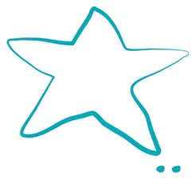

-

Famille
C'est d'abord grâce à ma famille, mon mari tout particulièrement, que j'ai osé réaliser mon rêve de faire mon vin. Leur soutien, leur confiance et leur encouragement m'ont donné la force nécessaire et aussi...des ailes ! Notre fils, né en 2013, participe à sa manière : Aux vendanges il courait d'abord vers les caisses de raisins pour les goûter un par un - contrôle qualité ! Eva est née à une semaine de la fin des vendanges 2015. Au rythme de leur curiosité, ils découvrent le tracteur (sans tourner la clé), les livraisons, les bouchons qui sautent et apprécient la ballade dans les vignes, la dégustation..du Jus de Raisin. Notre Domäne a été créé de toutes pièces en 2014 - nous sommes la première génération, pionnière ? Certes, nos ancêtres, des deux côtés, ont cultivé la vigne mais il faut remonter quelques générations et nous voici dans la forêt noire ou en Touraine. Transmission en pointillées...Reste un caractère familial de par la dimension de l'entreprise, l'architecture de la propriété avec une cour commune entre bâtiment agricole et la maison d'habitation ainsi qu'un accueil simple et chaleureux, avec la fameuse vue sur Béhuard avec la Loire, belle par tous les temps. La famille, c'est le cocon qui nous berce, ressource et qui nous voit grandir jour après jour. Qu'il s'agit de protéger et de savourer. Tout comme l'amitié.
-
TERROIR
Mot magique, tellement français que - à ma connaissance - aucune langue sait y mettre un seul mot pour traduire son sens profond. Il y a beaucoup de « terre » dedans. Respect de cette terre, donc d'abord. Une certaine idée de l'écologie. Un terroir que nous cherchons à révéler par notre travail de vigneron. Avec délicatesse et justesse, force & passion. Afin que vous puissiez y goûter. En direct de Rochefort sur Loire, village poétique et dynamique avec vue sur la Loire.
-
PRO
Le rêve de faire mon vin..et une préparation minutieuse pour le mettre en oeuvre. Montage financier sur la base d'un business plan sur cinq ans. Création d'une entreprise individuelle dès le printemps 2014. Me voici aux commandes. Plongée au quotidien et à plein temps dans la gestion professionnelle d'une entreprise. Passionnant et aussi grisant. Que ce soit la stratégie des investissements, le commerce, la communication, le management, la comptabilité, l'administration, la technique, la gestion de la trésorerie, les ressources humaines,..je m'y attèle avec attention et exigence, appuyée par une belle et compétente équipe de conseillers, fournisseurs, prestataires.
-
METIER
Vigneron. Métier biblique, gestes millénaires, traditions préservées qui rencontrent des recherches et technologies toutes récentes. Savant équilibre. Métier qui, j'en suis convaincue, s'apprend avant tout en regardant faire un maître...d'apprentissage. En l'écoutant, lui qui connaît son terroir, sa terre, ses vignes, ses vins sur les bouts des doigts depuis des générations. Sur la base d'un DEA de Chimie j'ai choisi un Brevet Professionnel de Responsable d'Entreprise Agricole (BPREA), formation par alternance. Donc toujours immergée dans le travail au quotidien, expérience dans plusieurs vignobles de France & Europe, le chemin mène enfin en Anjou. Je complète l'apprentissage de la production du vin par le diplôme en Commerce & Gestion de l'Ecole Supérieure des Sciences Commerciales d'Angers (ESSCA).
-
ENERGIES
Sujet d'une grande actualité - quelle énergie pour travailler mes vignes, livrer mes clients, me déplacer ? Tracteur ou pas tracteur ?...Pour l'instant, petite cuve à gazole et tracteur vert dans la cour. Travailler le sol avec un cheval dans l'avenir serait envisageable: Mes diplômes d'attelage obtenus au Haras du Pin me permettent d'envisager ce choix technique et le Domäne comprend des belles prairies pour nourrir le cheval. En parallèle j'ai fait le choix d'une voiture 100% électrique pour mes livraisons & déplacements. Afin de favoriser la production d'électricité à partir d'énergies renouvelables, je projette une adhésion à ENERCOOP, fournisseur d'électricité sous forme coopérative.
-
QUALITE
Elaborer des produits de qualité, purs et sincères, avec un habillage attractif: respecter la vigne et le vin de la plantation à la dégustation. Et donc respecter celle ou celui qui acquiert mon vin, vous, les clients. D'abord un côté technique : Travailler avec exigence, mettre en place une traçabilité interne et pourquoi pas un contrôle externe (indépendant) : Adhérer à un cahier de charge qui résulte en l'attribution d'un label, signe repère pour le client. J'ai ainsi choisi l'organisme Ecocert pour m'accompagner dans la certification de mon Domäne en Agriculture Biologique. Le second cahier de charge qui me guide est celui géré par l'Institut National des Appellations d'Origine (INAO) : l'AOC. Tout un programme ! Ensuite un côté humain : Etablir une relation de qualité avec tous les interlocuteurs du Domäne : le sens du service et de la satisfaction de mes clients et un échange professionnel & respectueux avec les fournisseurs/prestataires du Domäne.
-
BEAUTE
Que ce soit dans la vigne, le vin, pour l'habillage bouteille, le papier en-tête ou les cartons de vin, je cherche une harmonie et une certaine beauté. Aussi à une plus grande échelle : La conscience qu'en tant que vigneron, agriculteur nous façonnons le paysage quand nous cultivons nos terres et quand nous aménageons nos bâtiments. Notre chai ainsi que nos vignes sont situés au coeur de sites classés par les Architectes des Bâtiments de France et d'un patrimoine mondial de l'UNESCO... Les chartes associées guident nos choix...dans le noble but de préserver l'esthétique du paysage autour de nous. Dès notre arrivée nous avons inscrit notre propriété en tant que Refuge à la Ligue pour la Protection des Oiseaux (LPO).
-
CITOYEN
Au-delà de la vigne, la cité : Notre Domäne se situe à Rochefort sur Loire près d'Angers. Telle la vigne dans son terroir, notre entreprise s'est enracinée dans ce beau village dynamique et accueillant. Village qui représente une identité, une origine, la base de la vie publique. Il me semble important d'y participer, de s'intéresser aux actions de la Mairie en collaboration avec les habitants. D'instaurer un dialogue constructif pour faire évoluer la commune, que ce soit en tant que professionnel ou particulier. L'équipe municipale propose une infrastructure et organise ou soutient tout au long de l'année des événements. En tant qu'entreprise, nous apportons une activité économique et touristique. Citoyenne rochefortaise, franco-allemande et...européenne: Une enfance passé en Allemagne, des études universitaires en Angleterre, stages & voyages en Italie, cela m'a rendue tout naturellement cosmopolite.